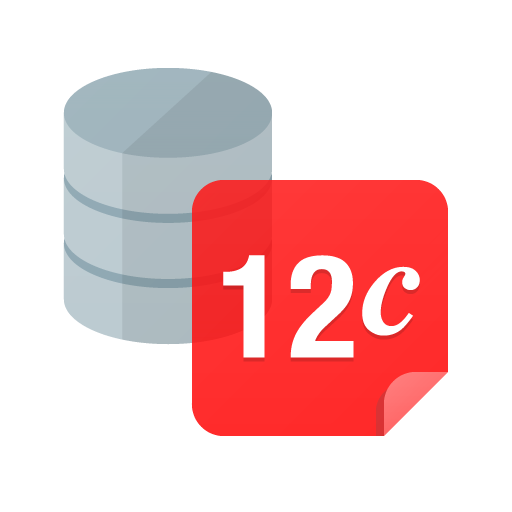
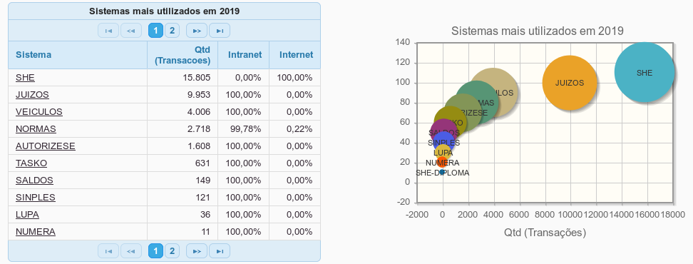

Relatório de Estágio
José Ricardo Bettini Pacola
Veículos:
Sistema de Gestão de Frotas do TRE-PBFausto Véras Maranhão Ayres
Francisco José Rodrigues Gomes
Cândido José Ramos do Egypto
10/04/2017 a 10/04/2019
Objetivo geral:
Ativos: soluções web desenvolvidas pela SEDES.
Veículos: Sistema de Gestão de Frotas do TRE-PB.
Auxiliar no desenvolvimento dos ativos, soluções web desenvolvidas pela SEDES.
Veículos: Sistema de Gestão de Frotas do TRE-PB.
O sistema deve ser capaz dereceber solicitações dos usuários e exibi-las em um painel onde o gestor deverá analisar os pedidos e montar as viagens adequando: rotas, disponibilidades dos motoristas e passageiros.
Objetivos Específicos:
- trabalho em equipe
- metodologias ágeis
- reuniões diárias, especificar, modelar o negócio, estimar, codificar, implantar, corrigir...
Ganhar experiência com o fluxo de trabalho da uma equipe de desenvolvimento incorporandoconceitos de metodologias ́ageis e versionamento de código.
Trabalhar com reuni ̃oes di ́arias, planejar solu ̧c ̃oes com amodelagem do neg ́ocio especificando suas respectivas hist ́orias de usu ́arios, codificar utilizandoas tecnologias e padr ̃oes adotados pela equipe, realizar entregas frequentes sempre buscandofeedback das releases pelo cliente e gerar documenta ̧c ̃ao explicando as funcionalidades e comoutiliza-las.
Tecnologias
Apache Subversion(SVN)
 NetBeans
NetBeans
 Maven
Maven
 Java 8
Java 8
 JavaServer Faces(JSF) 2.2
JavaServer Faces(JSF) 2.2
Primefaces 6.1
 JPA com Hibernate e Spring
JPA com Hibernate e Spring
 Oracle 12c
JasperReports
 Tomcat 8.x.x
Tomcat 8.x.x
O TRE possui um projeto denominado core que contém classes padrões utilizadas em todos os projetos java. São Beans Abstratos, Classes para manipulação de datas, Classes de autenticação a acesso ao LDAP...
O projeto Veículos foi concebido com o objetivo de controlar as solicitações de veículos e as viagens realizadas, promovendo uma melhor gestão da frota do TRE-PB bem como possibilitar a realização de auditorias
O gestor lotado na SETRAN, possui um perfil de administrador e em sua tela recebe assolicita ̧c ̃oes de todos os servidores e membros. Com a vis ̃ao de todas as solicita ̧c ̃oes o gestortem a possibilidade de analisar passageiros que ir ̃ao para os mesmos destinos, ou at ́e mesmona rota, com hor ́arios similares e montar as viagens adequando a disponibilidade de motoristase ve ́ıculos.
PORTARIA DIRETORIA-GERAL Nº 37/2017 TRE-PB/PTRE/DG - artigo 3º
- $$2 início do processo para demandas de novos sistemas ou manutenções de grande porte deve ser autorizado pelo Comitê Gestor (COGES)
- $$1 início do processo para demandas de manutenção de pequenoporte pode ser autorizado pela Coordenadoria de Sistemas (COSIS)
Esses projetos são devidamente cadastrados nos sistemas de gestão(catálogo técnico de sistemas)
Nele ficam contidas informações gerenciais. Ele é alimentado pelo coordenador de sistemas em conjundo com o chefe de seção
3o O processo de desenvolvimento e manutenção de software se inicia com a autorização de análise do problema, visando à elaboração de proposta de solução.
- O ciclo de vida para entrega da solução, refletindo necessidades identificadas quanto a atividades técnicas e não técnicas, tais como mapeamento de processos, desenvolvimento de software, implantação, testes, treinamento e normatização.
- O cronograma de marcos, que priorizará a velocidade e a frequência de entregas, em detrimento de soluções completas, de longo prazo.
- O escopo do primeiro ciclo de desenvolviment
- Deve haver rastreabilidade entre requisitos registrados e código- fonte
@Entity
@Table(name = "VEICULO")
@SequenceGenerator(name = "sequence", sequenceName = "SQ_VEICULO", allocationSize = 1)
public class Veiculo extends ObjetoIdentifiable {
@ManyToOne
@JoinColumn(name = "MOTORISTA_RESPONSAVEL_ID")
private Motorista motoristaResponsavel;
...
@Column(name = "PLACA")
private String placa;
@Column(name = "CHASSI")
private String chassi;
@ManyToOne
@JoinColumn(name = "MARCA_ID")
private Marca marca;
@Column(name = "MODELO")
private String modelo;
...
@Column(name = "NUMERO_PASSAGEIROS")
private Integer numeroPassageiros;
@Column(name = "TIPO_VEICULO")
private String tipo;
@Column(name = "ATIVO")
private Boolean ativo;
}
import org.springframework.stereotype.Service;
import org.springframework.transaction.annotation.Transactional;
@Service
@Transactional
public class VeiculoManager extends IdentifiableManager {
public void salvar(Veiculo veiculo) {
...
try {
getDao().salvar(veiculo);
getLogEntidadeManager().salvarLogInclusaoAlteracao(veiculoAntigo, veiculo);
} catch (DadosException ex) {
if (ManagerUtil.existeConstraintNaExcecao("UK_VEICULO_PLACA", ex)) {
throw new NegocioException("Já existe um veículo cadastrado com a mesma placa informada.", ex);
}
throw new RuntimeException("Problema gravando os dados.", ex);
}
}
...
public List listarTodosVeiculos(){
return getDao().listar();
}
public List listarAtivosDisponiveis() {
VeiculoFilter veiculoFiltro = new VeiculoFilter();
veiculoFiltro.setSituacao(SituacaoEnum.DISPONIVEL);
veiculoFiltro.setAtivo(Boolean.TRUE);
return getDao().listar(veiculoFiltro);
}
}
import org.springframework.stereotype.Repository;
@Repository
public class VeiculoDao extends JpaDao {
public List listar(VeiculoFilter filtro) {
SQLBuilder sql = new SQLBuilder("select v from Veiculo v where 1=1");
if (filtro.getLocal() != null) {
sql.add("and v.local = :local").param("local", filtro.getLocal().getCodigo());
}
if (filtro.getPlaca() != null && !filtro.getPlaca().isEmpty()) {
sql.add("and v.placa like :placa").param("placa", "%" + filtro.getPlaca().toUpperCase() + "%");
}
if (filtro.getMarca() != null && !filtro.getMarca().getNome().isEmpty()) {
sql.add("and v.marca = :marca").param("marca", filtro.getMarca());
}
if (filtro.getAtivo() != null) {
sql.add("and v.ativo = :ativo").param("ativo", filtro.getAtivo());
}
if (filtro.getSituacao() != null) {
sql.add("and v.situacao = :situacao").param("situacao", filtro.getSituacao().getCodigo());
}
if (filtro.getTipo() != null) {
sql.add("and v.tipo = :tipo").param("tipo", filtro.getTipo().getCodigo());
}
sql.add("order by v.modelo");
return criarQuery(sql).getResultList();
}
@Override
public List listar() {
String sql = "select v from Veiculo v order by v.modelo";
return criarQuery(sql).getResultList();
}
}
CREATE TABLE "VEICULOS"."VEICULO"
( "ID" NUMBER(19,0) NOT NULL ENABLE,
"CODIGO_RENAVAM" VARCHAR2(11 CHAR) NOT NULL ENABLE,
"LOCAL" CHAR(1 CHAR) NOT NULL ENABLE,
"MODELO" VARCHAR2(20 CHAR) NOT NULL ENABLE,
"PLACA" VARCHAR2(7 CHAR) NOT NULL ENABLE,
"SITUACAO" CHAR(1 CHAR) NOT NULL ENABLE,
"CHASSI" VARCHAR2(17 CHAR) NOT NULL ENABLE,
"TIPO_VEICULO" CHAR(1 CHAR) NOT NULL ENABLE,
"MARCA_ID" NUMBER(19,0) NOT NULL ENABLE,
"REPRESENTACAO" NUMBER(1,0) NOT NULL ENABLE,
"MOTORISTA_RESPONSAVEL_ID" NUMBER(19,0),
"ANO_FABRICACAO" NUMBER(4,0) NOT NULL ENABLE,
"ANO_MODELO" NUMBER(4,0) NOT NULL ENABLE,
"NUMERO_PASSAGEIROS" NUMBER(2,0) NOT NULL ENABLE,
"ATIVO" NUMBER(1,0) NOT NULL ENABLE,
CONSTRAINT "PK_VEICULO" PRIMARY KEY ("ID")
USING INDEX PCTFREE 10 INITRANS 2 MAXTRANS 255 COMPUTE STATISTICS
STORAGE(INITIAL 65536 NEXT 1048576 MINEXTENTS 1 MAXEXTENTS 2147483645
PCTINCREASE 0 FREELISTS 1 FREELIST GROUPS 1
BUFFER_POOL DEFAULT FLASH_CACHE DEFAULT CELL_FLASH_CACHE DEFAULT)
TABLESPACE "VEICULOS" ENABLE,
CONSTRAINT "UK_VEICULO_PLACA" UNIQUE ("PLACA")
CONSTRAINT "FK_VEICULO_MARCA" FOREIGN KEY ("MARCA_ID")
REFERENCES "VEICULOS"."MARCA" ("ID") ENABLE
import net.sf.jasperreports.engine.JRException;
import org.springframework.stereotype.Controller;
@Controller
@SpringScopeView
public class RelatorioFrotaBean extends AbstractManagedBean {
@Inject
private VeiculoManager veiculoManager;
@Inject
private ViagemManager viagemManeger;
...
@PostConstruct
public void inicializar() {
veiculos = veiculoManager.listar();
}
...
public void imprimirRelatorioFrota() throws JRException, IOException {
Map params = new HashMap<>();
List viagens = new ArrayList<>();
params.put("PATH_IMAGE", FacesContext.getCurrentInstance().getExternalContext().getRealPath("/images/brasao.png"));
...
CollectionReportBean report = new CollectionReportBean("relatorioFrota", params, formList);
adicionarMensagemInformacao("Formulário de frota:" + dataInicio + "à" + dataFinal + " gerado com sucesso");
report.executePDF();
FacesContext.getCurrentInstance().responseComplete();
registrarLogAcessoFuncionalidade("imprimirRelatoriodeFrota", null, null);
}
}
import org.springframework.stereotype.Controller;
@Controller
@SpringScopeView
public class IncluirEditarSolicitacaoBean extends AbstractManagedBean {
private Solicitacao solicitacao;
private List ufs;
private UF ufPB;
private List listaPassageiros;
...
private List municipios;
private List unidades;
@Inject
private SolicitacaoManager solicitacaoManager;
@Inject
private PassageiroManager passageiroManager;
@Inject
private AutenticacaoBean autenticacaoBean;
@PostConstruct
public void inicializar() {
Flash flash = FacesContext.getCurrentInstance().getExternalContext().getFlash();
Number id = (Number) flash.get(PARAM_ID);
if (!flash.containsKey(PARAM_ID) || voltarPara == null || voltarPara.isEmpty()) {
throw new RuntimeException("Acesso fora de contexto.");
}
if (id == null) {
solicitacao = new Solicitacao();
...
solicitacao.setSiglaUnidadeUsuarioSolicitante(autenticacaoBean.getLotacaoAtualServidor());
temDiaria = false;
} else {
solicitacao = solicitacaoManager.buscarParaEdicao(id.longValue());
carregarHorarios();
temDiaria = !solicitacao.getDiarias().isEmpty();
}
}
Resultados...
O sistema passou a ser utilizado em sua plenitude, com a versão 1.1.0, a partir de agosto de 2017. Em 2018 terminou o ano sendo o 4º sistema mais usado em todo o TRE com 23.375 transações.
até março de 2019 foram registradas 4.006 transações, já sendo o 3º sistema mais utilizado.
Saio satisfeito dessa jornada.
Tratando-se de tecnologias, muito ainda é pouco. Tudo que aprendi serve apenas como base para minha carreira de desenvolvedor. Conquistei apenas a ponta do iceberg... ainda falta muito a aprender e evoluir.